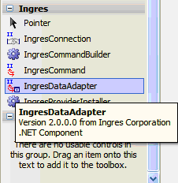
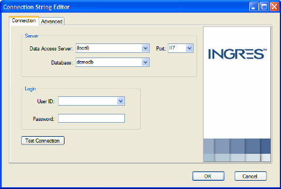

|
|
|
To add an IngresDataAdapter Control Using the Forms Designer
In Design view of Visual Studio, select and drag the IngresDataAdapter from the Tool Box onto the Windows Form design surface.

An "ingresDataAdaptern" component and its icon are added to the Visual Studio .NET designer component tray.
The welcome page of the Data Adapter Configuration Wizard is displayed.
You must configure a connection string before connecting to a database using a .NET application.
To define a connection string
Enter the connection information using the Connection String Editor of the Ingres Data Adapter Configuration Wizard, and click OK:

The wizard generates the following connection string:
Host=(local);Port=II7;Database=demodb
Note: User ID and password are optional when connecting to a local Data Access Server and the current operating system logged-in user is also a valid Ingres user.
Note: Each IngresDataAdapter added to the project creates an IngresConnection object. For the purposes of this demonstration, the ingresConnection1 object (first connection object created) is used for each IngresDataAdapter added.